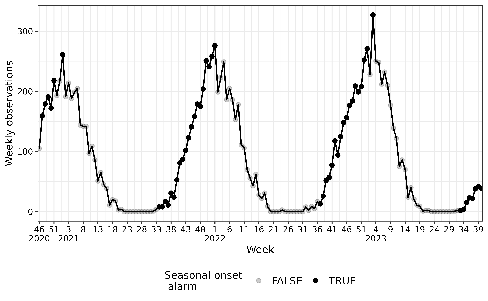
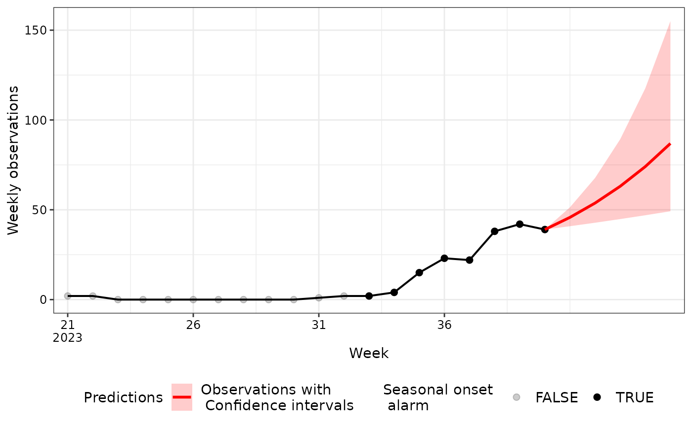

Methodology
The methodology used to detect the seasonal onset of epidemics, can be divided into two essential criteria:
- The local estimate of the exponential growth rate, , is significantly greater than zero.
- The average observation count over the past units of time exceeds a disease-specific threshold.
Here, denotes the window size employed to obtain the local estimate of the exponential growth rate and SoC. When both of these criteria are met, an alarm is triggered and the onset of the seasonal epidemic is detected.
The model is implemented in the seasonal_onset()
function of the aedseo package. Criteria one is fulfilled
if the growth_warning in the output is TRUE.
Criteria two is fulfilled if the
average_observation_warning in the output is
TRUE.
Exponential growth rate
The exponential growth rate, denoted as , represents the per capita change in the number of new cases per unit of time. Given that number of cases are integer-valued, the proposed method relies on generalized linear models (GLM). For count data, the Poisson distribution is a suitable choice as a model. Hence, the cases denoted as are assumed to follow a Poisson distribution
Here, the link function, , connects the linear predictor to the expected value of the data point, expressed as . Given a single continuous covariate , the mean can be expressed as
This is equivalent to a multiplicative model for , i.e.
Intuitively, negative values of result in a decline in the number of observed cases, while represents stability, and positive values of indicate an increase.
It is important to note that the Poisson distribution assumes that the mean and variance are equal. In reality, real data often deviate from this assumption, with the variance () being significantly larger than the mean. This biological phenomenon, known as overdispersion, can be addressed within a model in various ways. One approach is to employ quasi-Poisson regression, which assumes , or to use negative binomial regression (not implemented yet), which assumes , where both and are overdispersion parameters.
If the background population changes during the time-span for the cases, the growth rate estimations can be adjusted by applying population as offset in the model.
Applying the seasonal_onset algorithm
First we generate cases in a tsd object, with the
generate_seasonal_data() function.
# Construct an 'tsd' object with time series data
set.seed(222)
tsd_data <- generate_seasonal_data(
years = 3,
start_date = as.Date("2020-10-18"),
trend_rate = 1.002,
noise_overdispersion = 3,
relative_epidemic_concentration = 2,
time_interval = "weeks"
)Next, the tsd object is passed to the
seasonal_onset() function. Here, a window size of
k=5 is specified, meaning that a total of 5 weeks is used
in the local estimate of the exponential growth rate.
na_fraction_allowed = 0.4 defines how large a fraction of
cases in the k window that are allowed to be
NA, here 0.4*5 = 2 cases. Additionally, a 95%
confidence interval is specified. Finally, the exponential growth rate
is estimated using quasi-Poisson regression to account for
overdispersion in the data. A disease-specific threshold can
additionally be passed to the function, but is not necessary if only the
growth rate estimations are wanted. season_start and
season_end can be used to specify the season to stratify
the cases by. This algorithm runs across seasons, such that the first
cases in a new season will use the last k-1 cases from the
previous season. The seasonal_onset() function provides a
tsd_onset object with a comprehensive seasonal onset
analysis.
NOTE: As default the output is in cases, but if
incidence and population is in the
tsd object the average observations will be in incidence
and the model will use population as offset in each time
point.
seasonal_onset_results <- seasonal_onset(
tsd = tsd_data,
k = 5,
level = 0.95,
disease_threshold = 20,
family = "quasipoisson",
season_start = 21,
season_end = 20,
only_current_season = FALSE
)Visualising Growth Rates
In the first figure, cases over time are shown with a legend for the
seasonal onset alarm. In the second figure, the local estimates of the
growth rates are presented along with their corresponding 95% confidence
interval with a legend for the growth warning. This visualisation can be
generated by utilizing the plot() S3 method with objects of
the tsd_onset class.
plot(seasonal_onset_results)
Predicting Growth Rates
The predict() S3 method for tsd_onset
objects allows you to make predictions for future time steps based on
the estimated growth rates. Following is an example of predicted cases
for the next 5 weekly time steps.
prediction <- predict(seasonal_onset_results, n_step = 5)
In the example above, we use the predict method to predict growth
rates for the next 5 time steps, according to the
time_interval = "week" in the tsd_onset
object. The n_step argument specifies the number of steps
into the future you want to forecast. The resulting
tsd_predict object contains case estimates, lower bounds,
and upper bounds for each time step.
Summarising seasonal_onset results
The summary() S3 method for tsd_onset
objects provides a concise summary of your automated early detection of
seasonal_onset analysis. You can use it to retrieve
important information about your analysis, including the first seasonal
onset alarm (reference time point), SoC at reference time point (here
over a 5 week window), growth rate estimates at reference time point,
total number of growth warnings in the series and latest warnings
(growth and SoC). It helps you quickly assess the key findings of your
analysis.
summary(seasonal_onset_results)
#> Summary of tsd_onset object with disease_threshold
#>
#> Model output:
#> Reference time point (first seasonal onset alarm in season): 2023-09-24
#> Observations at reference time point: 38
#> Average observations (in k window) at reference time point: 20.4
#> Growth rate estimate at reference time point:
#> Estimate Lower (2.5%) Upper (97.5%)
#> 0.391 0.596 0.199
#> Total number of growth warnings in the series: 52
#> Latest growth warning: 2023-10-08
#> Latest average observations warning: 2023-10-08
#> Latest seasonal onset alarm: 2023-10-08
#>
#> The season for reference time point:
#> 2023/2024
#>
#> Model settings:
#> Called using distributional family: quasipoisson
#> Window size: 5
#> The time interval for the observations: weeks
#> Disease specific threshold: 20
#> Incidence denominator: NA